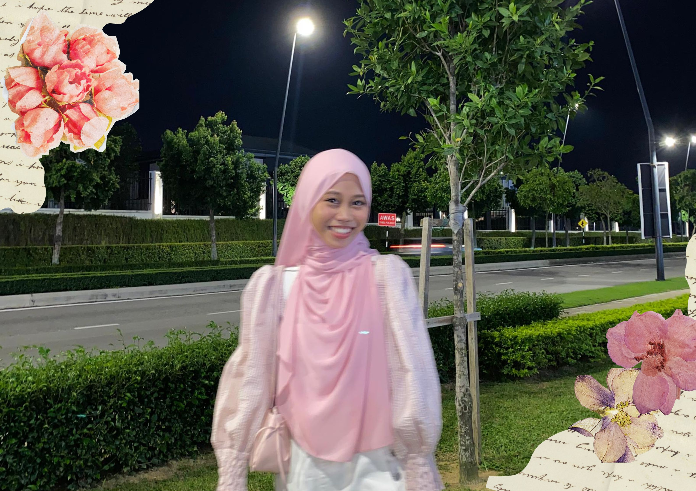
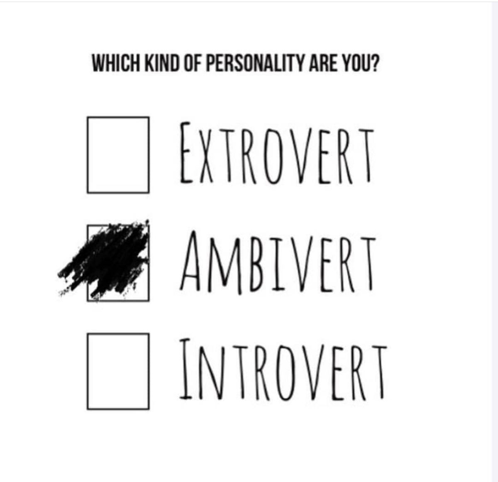
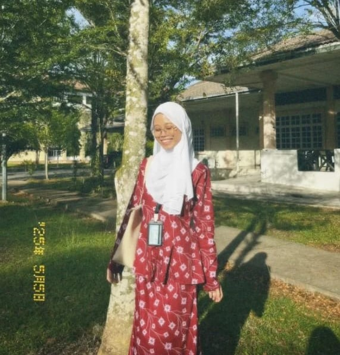
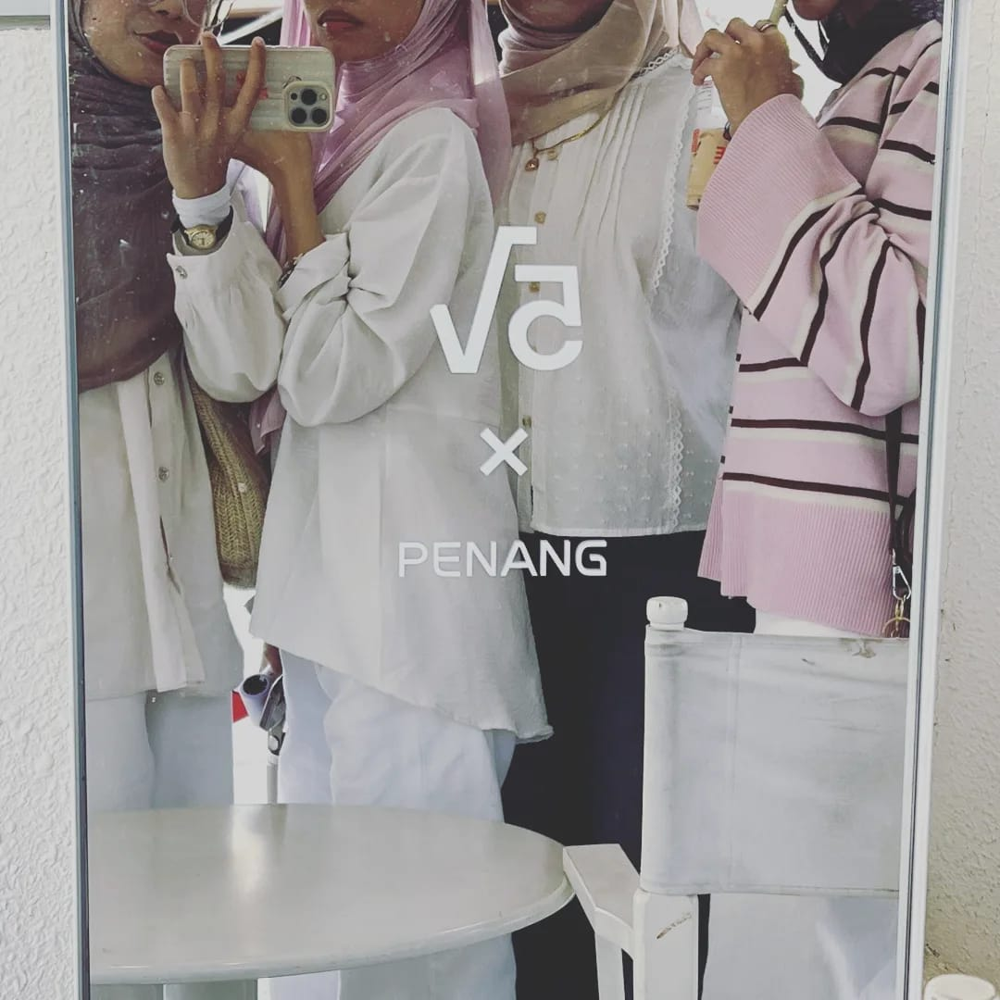
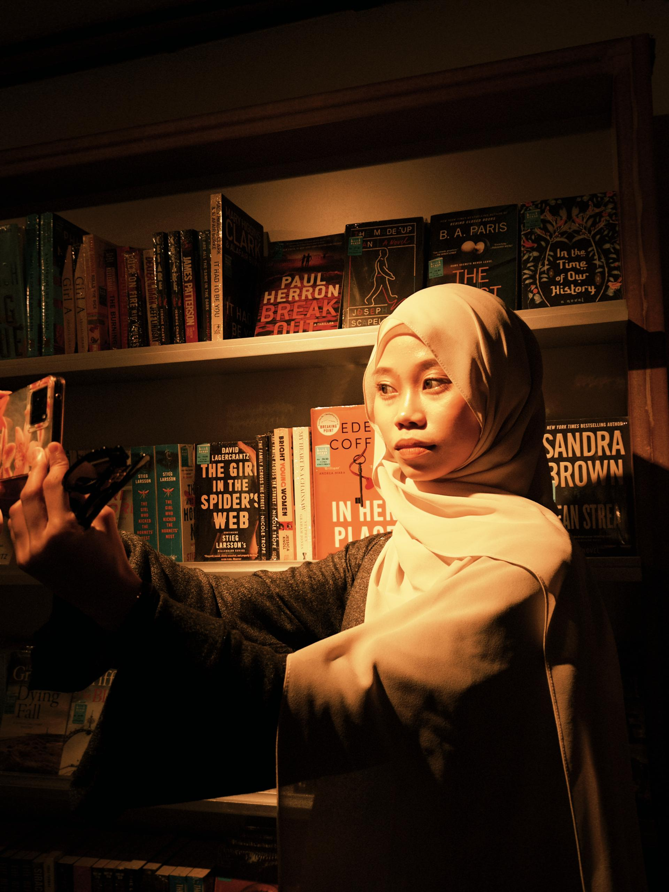
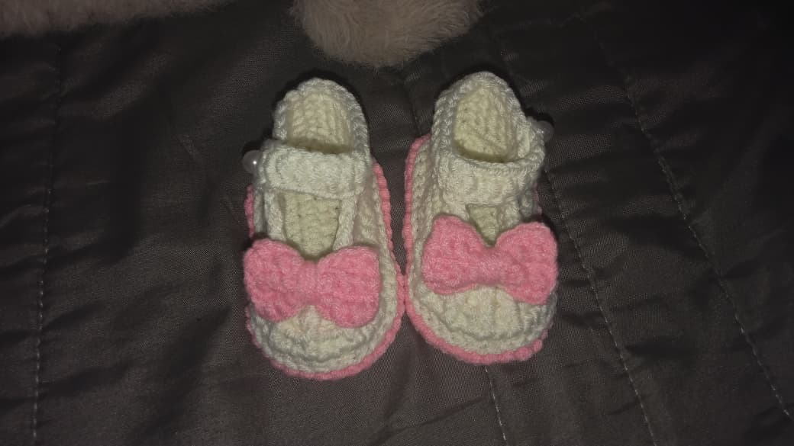

Home
Home
 About Me
About Me
 Education
Education
 Family
Family
 Friends
Friends
 Favorite Dessert
Favorite Dessert
 Hobbies
Hobbies
About Me

Hello! My name is Nuratikah Mohamed Iswandi. You can call me Atikah. I was born in 2006 at Hospital Tanjung Karang, and this year I am 20 years old. I am a Malaysian citizen who stays in Selangor. My date of birth falls on 15.6.2006. I am a loud girl with a quiet personality. I love to do numerous activities that seem fun and joyful, including extreme and indoor activities. I love to be friends with all types of people except those who give a negative impact towards me. I really don't care what other people think about me or how they see me. All I know is that I love myself and my personality. Some people might say I am a bad person, and some people might say I am the nicest person they have ever met, and for me, both are true, because I treat people the way they deserve. I have the ability to decide what I want or stop dealing with it if it's not what I truly want. I also have the ability to speak up if I think it's nonsense. I love everyone who comes into my life or already exists in my life, which are my friends and my family. I love to listen stories and problems that my friends and family had. I will be a good listener and try to give advice, or be their best supporter if they need me. Even so, on a normal and daily day, I love to be sarcastic with them because I like to see their aggressiveness, offensive, and defensive side.
Currently, I am a UiTM student who is taking part in the Diploma in Information Science. At first, I found it difficult to catch up with this course since I don't really like to expose myself to everyone, and the study environment was quite different from my secondary school. Now I'm already in semester 4, and my thoughts about this course have changed. I do really enjoy learning new things, do collaboration work, and creating creative projects.
Fun Facts About Me





I have an ambivert personality, I am a friendly person, I have a creative imagination, a critical thinker in solving problems, eager to help other people, I like taking pictures, I have numerous hidden talents, I enjoy my own company, I enjoy gathering activities